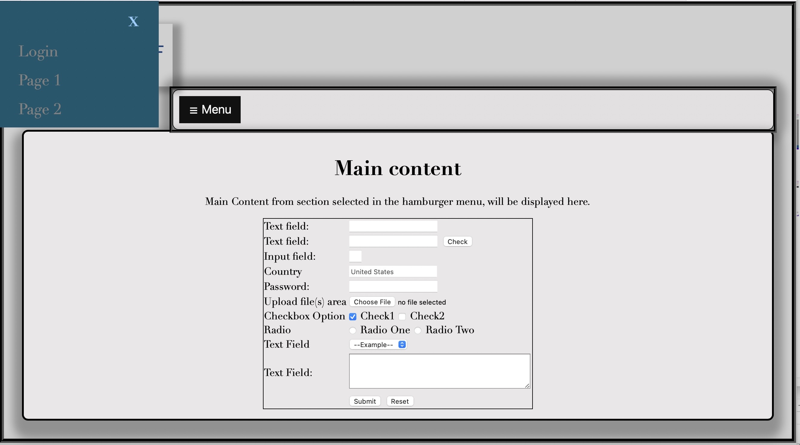

PHP Login Form
Form Template

DataTable Design
Microsite Project

Graphic Design Project

I am a dedicated and creative web developer with a passion for crafting user-focused, visually appealing, and technically sound websites and web applications. With a strong foundation in HTML, CSS, and JavaScript, I excel in front-end development and have experience working with popular frameworks like React.js. My keen eye for design, coupled with my problem-solving skills, allows me to create seamless and intuitive user experiences. I thrive in collaborative environments, where I can contribute my expertise in responsive design and accessibility to deliver exceptional digital solutions. Continuous learning is my mantra, and I am always eager to explore new technologies and stay updated with the latest trends in web development. Through my projects and commitment to quality, I aim to make a meaningful impact in the digital landscape, one line of code at a time.